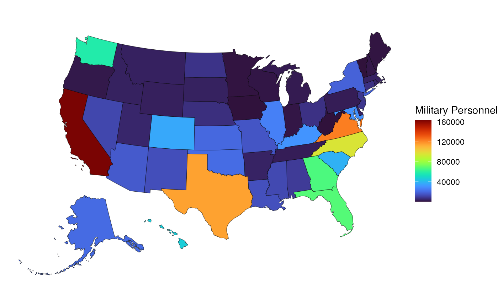

This page provides an overview for the get_troopdata()
function, highlighting some of its potential uses.
First things first—let’s load the troopdata package
library(troopdata)
library(ggplot2)
library(tidyverse)
#> ── Attaching core tidyverse packages ──────────────────────── tidyverse 2.0.0 ──
#> ✔ dplyr 1.2.1 ✔ readr 2.2.0
#> ✔ forcats 1.0.1 ✔ stringr 1.6.0
#> ✔ lubridate 1.9.5 ✔ tibble 3.3.1
#> ✔ purrr 1.2.2 ✔ tidyr 1.3.2
#> ── Conflicts ────────────────────────────────────────── tidyverse_conflicts() ──
#> ✖ dplyr::filter() masks stats::filter()
#> ✖ dplyr::lag() masks stats::lag()
#> ℹ Use the conflicted package (<http://conflicted.r-lib.org/>) to force all conflicts to become errors
library(viridis)
#> Loading required package: viridisLiteThe troopdata package provides multiple functions to
generate customizable datasets containing information on US military
deployments and accompanying data. The get_troopdata()
function represents the core of this package, providing customized data
on US overseas troop deployments, specifically.
Country-year data
The first function of this package is the
get_troopdata() function. At its most basic this function
returns a data frame of country-year troop deployment values for the
selected time period, using the startyear and
endyear parameters. Here are the values for the United
States from 1990 to 2020.
#> # A tibble: 6 × 6
#> iso3c year ccode countryname region troops_ad
#> <chr> <dbl> <dbl> <chr> <chr> <dbl>
#> 1 USA 1990 2 United States North America 1202031
#> 2 USA 1991 2 United States North America 1283014
#> 3 USA 1992 2 United States North America 1238280
#> 4 USA 1993 2 United States North America 1192215
#> 5 USA 1994 2 United States North America 1134519
#> 6 USA 1995 2 United States North America 1096501For users who want more refined data, the there are a number of arguments that allow the user to further tailor the output to their needs.
The host argument allows users to specify the set of
host countries for which they would like data returned. If you leave it
out you get every location in the data, the United States included. This
can be a vector of numerical values equal to a Gleditsch and Ward
country code, a vector of character values equal to an ISO3C country
code, or a vector of character values corresponding to full country
names. Note that when supplying a vector of values they must be
consistent and correspond to a single type of identifier at a time
(i.e. they must all be numeric country codes, ISO3C character codes,
country names, or region names). If one of the values does not match
anything, the function returns the rest and gives a warning that names
the value it could not match.
A note on the numeric codes: the data use the Gleditsch and Ward list, not the Correlates of War list. The two agree for most countries, but not all of them. Germany, for example, is 260 here and not 255. Territories and other locations that the Gleditsch and Ward list does not cover have codes of our own, such as 6 for Puerto Rico, 1002 for Greenland and 1008 for Guam. A numeric code that is not in the data returns an error rather than an empty data frame.
For example, you can use a numeric vector of country codes like this:
# Let's make the host selection more specific
hostlist <- c(200, 220)
example <- get_troopdata(host = hostlist, startyear = 1990, endyear = 2020)
#> Warning in get_troopdata(host = hostlist, startyear = 1990, endyear = 2020):
#> total_ad value shows the total number of active duty personnel only and does
#> not include any guard or reserve troops that may be present. For the total
#> number of uniformed personnel please choose guard_reserve = TRUE. Note that
#> guard and reserve data are not included in DMDC reports prior to 2008 so
#> troops_all should be equal to troops_ad for earlier time periods.
head(example)
#> # A tibble: 6 × 6
#> ccode year iso3c countryname region troops_ad
#> <dbl> <dbl> <chr> <chr> <chr> <dbl>
#> 1 200 1990 GBR United Kingdom Europe & Central Asia 25111
#> 2 200 1991 GBR United Kingdom Europe & Central Asia 23442
#> 3 200 1992 GBR United Kingdom Europe & Central Asia 20048
#> 4 200 1993 GBR United Kingdom Europe & Central Asia 16100
#> 5 200 1994 GBR United Kingdom Europe & Central Asia 13781
#> 6 200 1995 GBR United Kingdom Europe & Central Asia 12131Or you can use a character vector of ISO3C codes.
hostlist.char <- c("CAN", "GBR")
example.char <- get_troopdata(host = hostlist.char, startyear = 1970, endyear = 2020)
#> Warning in get_troopdata(host = hostlist.char, startyear = 1970, endyear =
#> 2020): total_ad value shows the total number of active duty personnel only and
#> does not include any guard or reserve troops that may be present. For the total
#> number of uniformed personnel please choose guard_reserve = TRUE. Note that
#> guard and reserve data are not included in DMDC reports prior to 2008 so
#> troops_all should be equal to troops_ad for earlier time periods.
#> Warning: Filtering `host` on ISO3C codes cannot reach every location in the
#> data. 3 observations across 1 countries and territories carry no ISO3C code, so
#> they are excluded from any ISO3C filter no matter which codes you ask for --
#> together 168 reported personnel between 1970 and 2020. The largest in this
#> window: Spratly Islands (168). To include them, pass `host` as a country name
#> or a Gleditsch and Ward country code, or leave `host` unset and subset
#> afterwards.
#> Warning: One or more of the requested ISO3C codes covers more than one country
#> code, because a sub-national unit with no ISO3C of its own carries its
#> parent's: GBR = Akrotiri, United Kingdom. These are returned as separate rows,
#> so aggregate across `ccode` rather than assuming one row per ISO3C and period.
head(example.char)
#> # A tibble: 6 × 6
#> iso3c year ccode countryname region troops_ad
#> <chr> <dbl> <dbl> <chr> <chr> <dbl>
#> 1 CAN 1970 20 Canada North America 2643
#> 2 CAN 1971 20 Canada North America 1835
#> 3 CAN 1972 20 Canada North America 1742
#> 4 CAN 1973 20 Canada North America 1362
#> 5 CAN 1974 20 Canada North America 1580
#> 6 CAN 1975 20 Canada North America 1301A few locations have no ISO3C code of their own and carry their
parent’s, so one code can return more than one location.
"GBR" returns the United Kingdom and Akrotiri,
"PRT" returns Portugal and the Azores, and
"UMI" returns Wake, Midway and Johnston Islands. Each
location comes back on its own row with its own country code, and a
warning tells you when this happens. Add the rows up if you want a
single figure for the ISO3C code.
Similarly, we can search for full country names:
hostlist.names <- c("Canada", "United Kingdom")
example.names <- get_troopdata(host = hostlist.names, startyear = 1970, endyear = 2020)
#> Warning in get_troopdata(host = hostlist.names, startyear = 1970, endyear =
#> 2020): total_ad value shows the total number of active duty personnel only and
#> does not include any guard or reserve troops that may be present. For the total
#> number of uniformed personnel please choose guard_reserve = TRUE. Note that
#> guard and reserve data are not included in DMDC reports prior to 2008 so
#> troops_all should be equal to troops_ad for earlier time periods.
#> Warning: `host` matched more than one country code: Canada (20), United Kingdom
#> (200). These are returned as separate rows, so aggregate across `ccode` if you
#> want one series for the country as a whole.
head(example.names)
#> # A tibble: 6 × 6
#> countryname year ccode iso3c region troops_ad
#> <chr> <dbl> <dbl> <chr> <chr> <dbl>
#> 1 Canada 1970 20 CAN North America 2643
#> 2 Canada 1971 20 CAN North America 1835
#> 3 Canada 1972 20 CAN North America 1742
#> 4 Canada 1973 20 CAN North America 1362
#> 5 Canada 1974 20 CAN North America 1580
#> 6 Canada 1975 20 CAN North America 1301When searching for country names, the function will do its best to identify the correct country based on the character string that’s included. This can include cases where fragments of country names are included and the function will try to return the correct country.
example.frag <- get_troopdata(host = "South Ko", startyear = 1970, endyear = 2020)
#> Warning in get_troopdata(host = "South Ko", startyear = 1970, endyear = 2020):
#> total_ad value shows the total number of active duty personnel only and does
#> not include any guard or reserve troops that may be present. For the total
#> number of uniformed personnel please choose guard_reserve = TRUE. Note that
#> guard and reserve data are not included in DMDC reports prior to 2008 so
#> troops_all should be equal to troops_ad for earlier time periods.
head(example.frag)
#> # A tibble: 6 × 6
#> countryname year ccode iso3c region troops_ad
#> <chr> <dbl> <dbl> <chr> <chr> <dbl>
#> 1 South Korea 1970 732 KOR East Asia & Pacific 52197
#> 2 South Korea 1971 732 KOR East Asia & Pacific 40740
#> 3 South Korea 1972 732 KOR East Asia & Pacific 41600
#> 4 South Korea 1973 732 KOR East Asia & Pacific 41864
#> 5 South Korea 1974 732 KOR East Asia & Pacific 40387
#> 6 South Korea 1975 732 KOR East Asia & Pacific 40204Finally, we can also search by region. Instead of inserting a country name or code into the host argument you can simply include character strings that represent regions. In these cases the function returns every country in the matching region or regions for the specified time period, one row per country and year, with the region in its own column. Nothing is added up across the countries of a region.
The regions are East Asia & Pacific, Europe & Central Asia, Latin America & Caribbean, Middle East & North Africa, North America, South Asia and Sub-Saharan Africa. (Antarctica and the “Afloat” location are in regions of their own.) Region names are matched as fragments, which calls for a little care:
- A fragment that matches one region works fine.
"Europe"returns Europe & Central Asia. - A fragment that matches several regions returns all of them, with a
warning.
"Asia"returns the countries of East Asia & Pacific, South Asia, and Europe & Central Asia. - A fragment that is also part of a country name is read as a country,
again with a warning.
"Africa"returns South Africa and the Central African Republic, so ask for"Sub-Saharan Africa"instead. - Regions and country names cannot be mixed in one call.
region.list <- c("Europe & Central Asia", "East Asia & Pacific")
example.region <- get_troopdata(host = region.list, startyear = 1970, endyear = 2020)
#> Warning in get_troopdata(host = region.list, startyear = 1970, endyear = 2020):
#> total_ad value shows the total number of active duty personnel only and does
#> not include any guard or reserve troops that may be present. For the total
#> number of uniformed personnel please choose guard_reserve = TRUE. Note that
#> guard and reserve data are not included in DMDC reports prior to 2008 so
#> troops_all should be equal to troops_ad for earlier time periods.
head(example.region)
#> # A tibble: 6 × 6
#> countryname year ccode iso3c region troops_ad
#> <chr> <dbl> <dbl> <chr> <chr> <dbl>
#> 1 Abkhazia 2008 396 GEO Europe & Central Asia 0
#> 2 Abkhazia 2009 396 GEO Europe & Central Asia 0
#> 3 Abkhazia 2010 396 GEO Europe & Central Asia 0
#> 4 Abkhazia 2011 396 GEO Europe & Central Asia 0
#> 5 Abkhazia 2012 396 GEO Europe & Central Asia 0
#> 6 Abkhazia 2013 396 GEO Europe & Central Asia 0Disaggregated Data
By default the get_troopdata() function returns the
aggregate sum of active duty military personnel. But the original DMDC
reports often include disaggregated figures, with separate counts for
each branch of the military. The branch argument allows
users to specify whether they would like to receive the aggregate sum of
all branches or the disaggregated figures for each branch. This argument
can take on two values: TRUE or FALSE, with
the default being FALSE.
# Let's get the disaggregated data for the US deployments to Canada and the UK
hostlist <- c("Canada", "United Kingdom")
example.branch <- get_troopdata(host = hostlist, branch = TRUE, startyear = 1970, endyear = 2020)
#> Warning: Branch data only includes active duty by default. This preserves
#> continuity across time periods as guard and reserve data are not reported prior
#> to 2008. Also note that Iraq does not have branch data for 2003-2007 and
#> troops_ad value is estimated using alternative sources.
#> Warning in get_troopdata(host = hostlist, branch = TRUE, startyear = 1970, :
#> total_ad value shows the total number of active duty personnel only and does
#> not include any guard or reserve troops that may be present. For the total
#> number of uniformed personnel please choose guard_reserve = TRUE. Note that
#> guard and reserve data are not included in DMDC reports prior to 2008 so
#> troops_all should be equal to troops_ad for earlier time periods.
#> Warning: `host` matched more than one country code: Canada (20), United Kingdom
#> (200). These are returned as separate rows, so aggregate across `ccode` if you
#> want one series for the country as a whole.
head(example.branch)
#> # A tibble: 6 × 12
#> countryname year ccode iso3c region troops_ad army_ad navy_ad air_force_ad
#> <chr> <dbl> <dbl> <chr> <chr> <dbl> <dbl> <dbl> <dbl>
#> 1 Canada 1970 20 CAN North Am… 2643 12 413 2218
#> 2 Canada 1971 20 CAN North Am… 1835 12 433 1381
#> 3 Canada 1972 20 CAN North Am… 1742 14 410 1315
#> 4 Canada 1973 20 CAN North Am… 1362 12 390 951
#> 5 Canada 1974 20 CAN North Am… 1580 11 593 969
#> 6 Canada 1975 20 CAN North Am… 1301 11 533 757
#> # ℹ 3 more variables: marine_corps_ad <dbl>, coast_guard_ad <dbl>,
#> # space_force_ad <dbl>In each case the _ad suffix on the variable name
indicates “Active Duty” numbers for the given branch.
Note that the total does not necessarily equal the sum of the individual branches. The function returns the maximum annual value for each branch. In cases where there are quarterly values reported, the sum total may come from one quarter and the individual branch values may come from another quarter. The section on time periods below shows an example.
We can also include disaggregated data national guard and reserve
personnel, as well as DoD civilians. The reports give these numbers from
2008 forward, so they show up as NA for earlier years.
Setting guard_reserve = TRUE also returns
troops_all, which is the active duty total plus the guard
and reserve columns. Before 2008 it is the same as
troops_ad.
hostlist <- c("Canada", "United Kingdom")
example.branch <- get_troopdata(host = hostlist, branch = TRUE, startyear = 1970, endyear = 2020, guard_reserve = TRUE, civilians = TRUE)
#> Warning: Branch data only includes active duty by default. This preserves
#> continuity across time periods as guard and reserve data are not reported prior
#> to 2008. Also note that Iraq does not have branch data for 2003-2007 and
#> troops_ad value is estimated using alternative sources.
#> Warning: Guard and Reserve data only available for 2008 forward. Values will
#> display as NA for earlier time periods.
#> Warning: `host` matched more than one country code: Canada (20), United Kingdom
#> (200). These are returned as separate rows, so aggregate across `ccode` if you
#> want one series for the country as a whole.
head(example.branch)
#> # A tibble: 6 × 27
#> countryname year ccode iso3c region troops_ad army_ad navy_ad air_force_ad
#> <chr> <dbl> <dbl> <chr> <chr> <dbl> <dbl> <dbl> <dbl>
#> 1 Canada 1970 20 CAN North Am… 2643 12 413 2218
#> 2 Canada 1971 20 CAN North Am… 1835 12 433 1381
#> 3 Canada 1972 20 CAN North Am… 1742 14 410 1315
#> 4 Canada 1973 20 CAN North Am… 1362 12 390 951
#> 5 Canada 1974 20 CAN North Am… 1580 11 593 969
#> 6 Canada 1975 20 CAN North Am… 1301 11 533 757
#> # ℹ 18 more variables: marine_corps_ad <dbl>, coast_guard_ad <dbl>,
#> # space_force_ad <dbl>, army_national_guard <dbl>, air_national_guard <dbl>,
#> # army_reserve <dbl>, navy_reserve <dbl>, marine_corps_reserve <dbl>,
#> # air_force_reserve <dbl>, coast_guard_reserve <dbl>,
#> # total_selected_reserve <dbl>, troops_all <dbl>, army_civilian <dbl>,
#> # navy_civilian <dbl>, marine_corps_civilian <dbl>, air_force_civilian <dbl>,
#> # dod_civilian <dbl>, total_civilian <dbl>Time Periods
The most recent update also allows users to specify more fine grained
temporal coverage. DMDC reports have historically been released on an
annual basis, but in more recent years they have been released twice
annually or even quarterly, and the get_troopdata()
function allows users to specify whether they would like to receive the
quarterly data or the annual data. The quarters argument
allows users to specify whether they would like to receive the quarterly
data or the annual data. This argument can take on two values:
TRUE or FALSE with the default being
FALSE.
The data have one report per year through 2012, two for 2013 (September and December), and four per year from 2014 forward (March, June, September and December). The most recent year only has the reports that have been published so far.
If the user opts to return quarterly data, the function will return
the month and quarter columns in addition to the year, and each row
holds the figures from that one report. A country that a report does not
list gets a 0 for that period rather than NA, so a zero can
mean either that the report shows zero or that the country is not in it.
Territories such as Guam or Bermuda are different: they only have a row
for the periods in which a report lists them.
Here we use full country names. See! Neat!
# Let's get the quarterly data for the US deployments to Canada and the UK
hostlist <- c("Canada", "United Kingdom")
example.quarters <- get_troopdata(host = hostlist, branch = TRUE, startyear = 2015, endyear = 2022, quarters = TRUE)
#> Warning: Branch data only includes active duty by default. This preserves
#> continuity across time periods as guard and reserve data are not reported prior
#> to 2008. Also note that Iraq does not have branch data for 2003-2007 and
#> troops_ad value is estimated using alternative sources.
#> Warning: Some service branches do not report data for all quarters. See the
#> following note from December, 2022, June 2023, and March 2023 DMDC reports:
#> 'The Army is converting its Integrated Personnel and Pay System (IPPS-A) and so
#> the Army did not provide military personnel data for end-of-June 2023.' We use
#> a stepwise imputation process to fill in the Army values between September 2022
#> and September 2023, taking the difference between the values for these two
#> periods and incrementally adjusting the Army figures for the missing periods
#> between. The other services reported for those quarters and their values are
#> shown as reported; totals are the sum of the two.
#> Warning in get_troopdata(host = hostlist, branch = TRUE, startyear = 2015, :
#> total_ad value shows the total number of active duty personnel only and does
#> not include any guard or reserve troops that may be present. For the total
#> number of uniformed personnel please choose guard_reserve = TRUE. Note that
#> guard and reserve data are not included in DMDC reports prior to 2008 so
#> troops_all should be equal to troops_ad for earlier time periods.
#> Warning: `host` matched more than one country code: Canada (20), United Kingdom
#> (200). These are returned as separate rows, so aggregate across `ccode` if you
#> want one series for the country as a whole.
head(example.quarters)
#> # A tibble: 6 × 14
#> countryname year month quarter ccode iso3c region troops_ad army_ad navy_ad
#> <chr> <dbl> <chr> <dbl> <dbl> <chr> <chr> <dbl> <dbl> <dbl>
#> 1 Canada 2015 Decemb… 4 20 CAN North… 91 3 1
#> 2 Canada 2015 June 2 20 CAN North… 153 8 43
#> 3 Canada 2015 March 1 20 CAN North… 144 8 38
#> 4 Canada 2015 Septem… 3 20 CAN North… 146 8 42
#> 5 Canada 2016 Decemb… 4 20 CAN North… 141 6 38
#> 6 Canada 2016 June 2 20 CAN North… 146 6 41
#> # ℹ 4 more variables: air_force_ad <dbl>, marine_corps_ad <dbl>,
#> # coast_guard_ad <dbl>, space_force_ad <dbl>How the annual values are chosen
When a year has more than one report, the annual data return the highest value reported in that year. This is not an average, and it is not the value from one particular month. It is also done separately for each column, so the total can come from one report and a branch figure from another.
Japan in 2019 is a good example. Here are the four quarterly reports:
japan.quarters <- get_troopdata(host = "Japan", branch = TRUE, startyear = 2019, endyear = 2019, quarters = TRUE)
# Put the rows in calendar order and keep the columns we want to compare
japan.quarters <- japan.quarters[order(japan.quarters$quarter), ]
japan.quarters[, c("countryname", "year", "month", "troops_ad", "army_ad", "navy_ad", "air_force_ad", "marine_corps_ad")]
#> # A tibble: 4 × 8
#> countryname year month troops_ad army_ad navy_ad air_force_ad marine_corps_ad
#> <chr> <dbl> <chr> <dbl> <dbl> <dbl> <dbl> <dbl>
#> 1 Japan 2019 March 56134 2657 20846 12140 20475
#> 2 Japan 2019 June 55327 2671 20845 12447 19348
#> 3 Japan 2019 Sept… 55245 2626 20392 12602 19607
#> 4 Japan 2019 Dece… 57094 2516 20733 12757 21070And here is the annual row for the same year:
japan.annual <- get_troopdata(host = "Japan", branch = TRUE, startyear = 2019, endyear = 2019)
japan.annual[, c("countryname", "year", "troops_ad", "army_ad", "navy_ad", "air_force_ad", "marine_corps_ad")]
#> # A tibble: 1 × 7
#> countryname year troops_ad army_ad navy_ad air_force_ad marine_corps_ad
#> <chr> <dbl> <dbl> <dbl> <dbl> <dbl> <dbl>
#> 1 Japan 2019 57094 2671 20846 12757 21070The annual troops_ad value is the December figure, the
largest of the four. But the annual army_ad value is the
June figure and the annual navy_ad value is the March
figure, because those were the largest for each of those branches. This
is why the branch columns in the annual data do not have to add up to
troops_ad. If you need figures that all come from the same
report, use quarters = TRUE.
Before 2013 there is only one report per year, so the annual value is the value from that report, or the outside figure described below where the report has none.
Gaps in the reports
A few values do not come straight from a report. The big ones are:
- 1951 and 1952. There are no reports for these years. For countries the totals move in equal steps between the 1950 and 1953 figures, and there are no branch figures. Most territories have no rows for these two years.
-
December 2022, March 2023 and June 2023. The Army
did not report any personnel figures for these quarters while it
switched to a new personnel system. In the country data the Army figures
for these quarters move in equal steps between the September 2022 and
September 2023 reports, and the totals are those figures plus what the
other services reported. The data for US states and the reports
themselves are left as published, so the Army figures and the totals are
NAthere. -
June 2023. The June 2023 report has its civilian
columns and some of its guard and reserve columns printed one row too
low for part of the overseas list, so that Qatar’s row shows Puerto
Rico’s numbers. The country data put these figures back on the right
rows. The reports themselves (
reports = TRUE) are left as published. - Afghanistan, Iraq, Kuwait and Syria. The reports do not give the number of personnel deployed to these countries for much of the 2000s, and from December 2017 they leave out deployed personnel in Afghanistan, Iraq and Syria again. Where we could, we use figures from Kane’s data or from public reporting instead (Afghanistan 2001-2005 and 2018-2020, Iraq 2003-2007 and 2018-2021, Kuwait 2003-2007, and Syria 2018-2021). These are totals only, so the branch columns are zero. After those years the values are whatever the reports show, which is only a handful of people and well below the actual US presence. For Iraq in 2018-2021 and Syria in 2021 the outside figure only appears in the June row of the quarterly data, so use the annual data for those.
The Rebuild
Notes article and the help page for get_troopdata() go
through all of this in more detail.
Personnel Afloat
The reports for 1950 through 2007 count personnel ashore and
personnel afloat separately, and for some years they assign the afloat
personnel to a country, usually the country of the nearest port. By
default the country figures only include personnel ashore. The
afloat argument lets you change that:
-
afloat = "exclude"is the default. Country figures are personnel ashore only. -
afloat = "include"adds the afloat personnel assigned to a country to that country’s totals. -
afloat = "separate"keeps the ashore figures as they are and returns the afloat personnel next to them in thetroops_afloat,navy_afloatandmarine_corps_afloatcolumns.
greece <- get_troopdata(host = "Greece", startyear = 1958, endyear = 1962, afloat = "separate")
greece[, c("countryname", "year", "troops_ad", "troops_afloat", "navy_ad", "navy_afloat")]
#> # A tibble: 5 × 6
#> countryname year troops_ad troops_afloat navy_ad navy_afloat
#> <chr> <dbl> <dbl> <dbl> <dbl> <dbl>
#> 1 Greece 1958 1575 7018 41 6910
#> 2 Greece 1959 1592 6721 39 6389
#> 3 Greece 1960 1976 13090 308 13090
#> 4 Greece 1961 1937 5383 33 5383
#> 5 Greece 1962 2576 6186 339 6186There were about 2,000 personnel ashore in Greece in 1960, and more than 13,000 afloat who were counted there because that is where the fleet was on the day of the count.
Everyone afloat is also carried in a separate location named “Afloat” (country code 10200). It is not a country, so remember to leave it out if you are adding up countries. From September 2008 the reports count a ship’s crew at its home port, as part of the country or state figure, so the argument makes no difference for 2008 and later.
Data for US States
The package now incorporates data on the number of US service personnel in each US state. The functionality of the command works just as it does when users are looking to pull data for countries, with a couple of small changes.
First, these data come from the DMDC reports beginning in 2008, so we don’t have as much time to work with as we do with the country-level data. They cover the fifty states and the District of Columbia. Puerto Rico, Guam and the other territories are in the country-level data.
Second, users need to make sure they set
state_data = TRUE in the function call. The data for US
states work with different identifiers, so this argument needs to be set
for the function to differentiate between queries looking at country
data and queries looking at data on US states.
Finally, as mentioned above, the data for US states use different
identifiers for the relevant geographic units. Users can search for data
by the state’s name using character strings, just like in the
country-level data. Capitalization does not matter. A full state name
returns just that state, so "kansas" gives you Kansas and
"Virginia" does not also give you West Virginia, while part
of a name such as "Carolina" returns every state that
contains it. Users can also look to match US states by their numeric
FIPS codes. These are useful if we’re interested in generating things
like maps using the state-level data.
The branch, guard_reserve,
civilians and quarters arguments work the same
way they do for countries, and annual values are again the highest value
reported in the year. Two things to keep in mind. The Army did not
report for December 2022, March 2023 and June 2023, and the state data
leave the Army figures and the totals as NA for those
quarters rather than filling them in, so the annual Army figures and
totals for 2022 and 2023 come from the other quarters. And from December
2015 to December 2017 the reports list a large number of Navy personnel
in no state at all, so the Navy figures for home-port states like
Virginia and California are lower in those quarters.
library(usmap)
library(ggplot2)
states <- get_troopdata(startyear = 2025, endyear = 2025, state_data = TRUE)
#> Warning in get_troopdata(startyear = 2025, endyear = 2025, state_data = TRUE):
#> total_ad value shows the total number of active duty personnel only and does
#> not include any guard or reserve troops that may be present. For the total
#> number of uniformed personnel please choose guard_reserve = TRUE. Note that
#> guard and reserve data are not included in DMDC reports prior to 2008 so
#> troops_all should be equal to troops_ad for earlier time periods.
map.data <- usmap::us_map(regions = "states") %>%
dplyr::mutate(fips = as.numeric(fips)) %>%
left_join(states, by = c("fips" = "fipscode"))
ggplot2::ggplot(data = map.data) +
geom_sf(aes(geometry = geom, fill = troops_ad)) +
theme_void() +
viridis::scale_fill_viridis(option = "turbo") +
labs(fill = "Military Personnel")
Reports
Finally, users may want to view the original DMDC reports that the
data is drawn from. The reports argument allows users to
specify whether they would like to receive the original DMDC reports
that the data is drawn from. This argument can take on two values:
TRUE or FALSE with the default being
FALSE.
Users can specify the host, startyear, and
endyear arguments as they would for the main function. The
function will return a single data frame containing all of the original
columns found in the DMDC reports upon which the data are based. The
formatting and column names will be roughly consistent with the original
reports, but the data will be filtered to only include the specified
host countries and time period.
The reports are returned row by row, as they were published, with nothing added up. This means a country code can show up on more than one row in the same period when a report lists parts of a country separately. Japan and the Ryukyu Islands (Okinawa), for example, are separate lines in the reports through 1973 and both come back when you ask for Japan. The country-level data add those rows together.
The source column in the data frame provides the month
and the year that the data was drawn from. This allows the user to more
easily track down the original DMDC report that the data was drawn from.
The current and archived reports can be found here: DMDC
Reports
Also note that if reports is set to TRUE
then the user must also set the quarters argument to
TRUE.